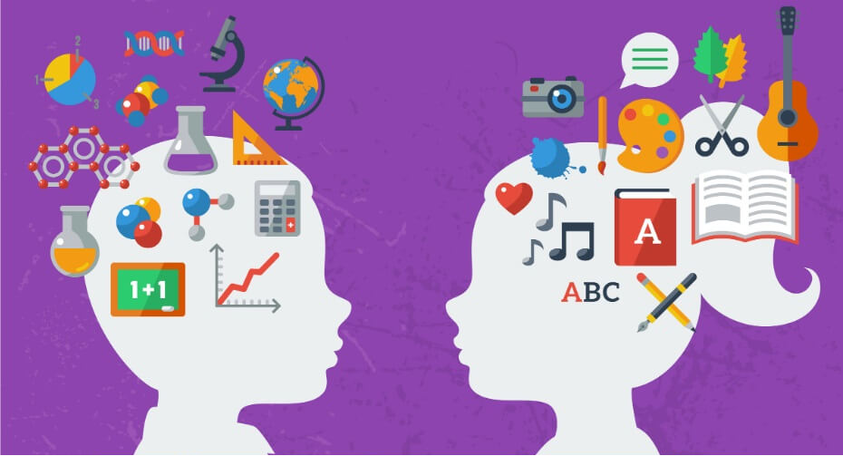

La Psicología Educativa es la rama de la Psicología que se encarga de estudiar el aprendizaje y el desarrollo humano en el ámbito de la educación. Sus investigaciones, siempre bajo un marco científico, buscan optimizar los aprendizajes y el rendimiento de los alumnos. Estos estudios se traducen en nuevos planteamientos sobre las estrategias educativas eficaces y los programas de intervención más novedosos. De esta definición podemos extraer el segundo foco de atención de la Psicología Educativa: la instrucción del profesorado. Es decir, las investigaciones psicoeducativas están ligadas a la innovación, ya que permiten aplicar nuevos modelos y técnicas de enseñanza en las aulas. La Psicología de la Educación no solo se ciñe al ámbito escolar. Sus principios teóricos y prácticos también se aplican en otros contextos, como el militar, la salud pública o la familia. De hecho, los humanos no dejamos de aprender y desarrollarnos como individuos cuando terminamos nuestros estudios académicos.
